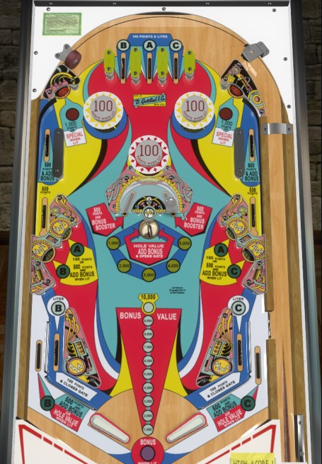

Magnotron is the 4 player version. Duotron is the otherwise identical 2 player version.
Hit the captive ball 4 times to advance the center saucer to 5,000 points and get several multi-bonus advances, then shoot the center saucer all day for 5,000 points and a bonus advance each. The upper side lanes also give bonus advances and 1,000 or 1,500 points at a time, and the upper standup targets are lit for specials after A-B-C are completed.
The top lanes score 100 points and collect the letters B, A, and C from left to right. The B can also be collected at the left in lane, and the C can also be collected at the right in lane. The A can only be collected at the center top lane, so it is important to pick up on a plunge. Collecting A, B, or C lights the corresponding standup targets in the lower left and right for 500 points and a bonus advance rather than 100 points. Collecting the B also lights the left out lane to score the saucer value instead of 500 points and a bonus advance; the C does the same with the right out lane. Collecting all three of A-B-C on the same ball lights the standup targets at the top of the table for special. A-B-C letters are never carried from ball to ball.
The standup targets in front of the mouths of the kicker lanes on each side score 1,000 points, or a Special when lit after A-B-C have all been collected. The rollover switch closer to the entrance of the lane scores 500 points and a bonus advance. The kicker itself also scores 500 points, but only if the rollover switch has finished scoring first. Thus, depending on the physical condition of the game and the speed at which the ball enters the kicker lane, a trip here will usually be worth 1,000 or 1,500 points plus two bonus advances. The ball can also enter the kicker lanes from lower down, though, skipping the first switch on the way in; this path scores 1,000 points and 1 bonus advance.
The kicker lanes cannot be shot for directly, but bumpers send the ball into these lanes relatively frequently. It's also not unheard of for the ball to be kicked out of the kicker lane, hit one or more bumpers, and then sent back into the lane very shortly afterward. It may be worth nudging to encourage this to happen where possible just for the extra bonus advances.
There is a half-moon structure in the center of the table, with one captive ball inside. Hitting the captive ball from one side to the other- regardless of which direction- scores 500 points; increases the center saucer value in the sequence 1,000 - 2,000 - 3,000 - 4,000 - 5,000 - back to 1,000; and adds either 1, 2, 3, 4, or 5 bonus advances depending on game settings. The center saucer scores 1 bonus advance and the current saucer value, as well as opening the right out lane gate. It is generally ideal to backhand the captive ball, i.e., shooting for the captive ball only when it is on the same side as the flipper that is cradling the current ball in play.
On at least one virtual recreation of Magnotron in VPX, this behavior is emulated incorrecty, and the center saucer raises its own value each time it is hit, rather than the captive ball governing when the saucer changes value.
Score 100 points, or 500 and a bonus advance when lit. Collect the corresponding letter to light the target: B-A for the two on the left, A-C for the two on the right. Don't shoot for these directly; the captive ball, center saucer, or a possible bounce into the upper kicker lanes are all safer and more lucrative.
Magnotron has a conventional in/out lane setup. The left and right out lanes score 500 points and a bonus advance when not lit, or the current saucer value when lit; light them by collecting the B (left) or C (right). In lanes score 100 points and award the B (left) or C (right).
There is a gate in the right out lane. It opens when the ball is shot into the center saucer, and it closes when the ball drains, goes through the gate itself, or goes through either in lane. The out lane gate lies above the right out lane switch, so you won't get any points simply for using the gate.
Bonus is advanced by the rollover switches in the upper kicker lanes, the center saucer, lit lower standup targets, and unlit out lanes. The captive ball scores a Bonus Booster which can be set by operators to award 1, 2, 3, 4, or 5 bonus advances. Max base bonus is 15,000 points. Double bonus is given for free on the final ball of the game; it cannot be earned at any other time. Bonus is valuable enough that care should generally be taken not to tilt the game regardless of ball length, with the exception of an attempt to save a house ball since the first 1,000 points of bonus is not given for free.

All copyrighted names and terms in this document belong to their respective owners. The information provided in this document is for educational purposes only and no infringement is intended.
Back to top To game list To main page